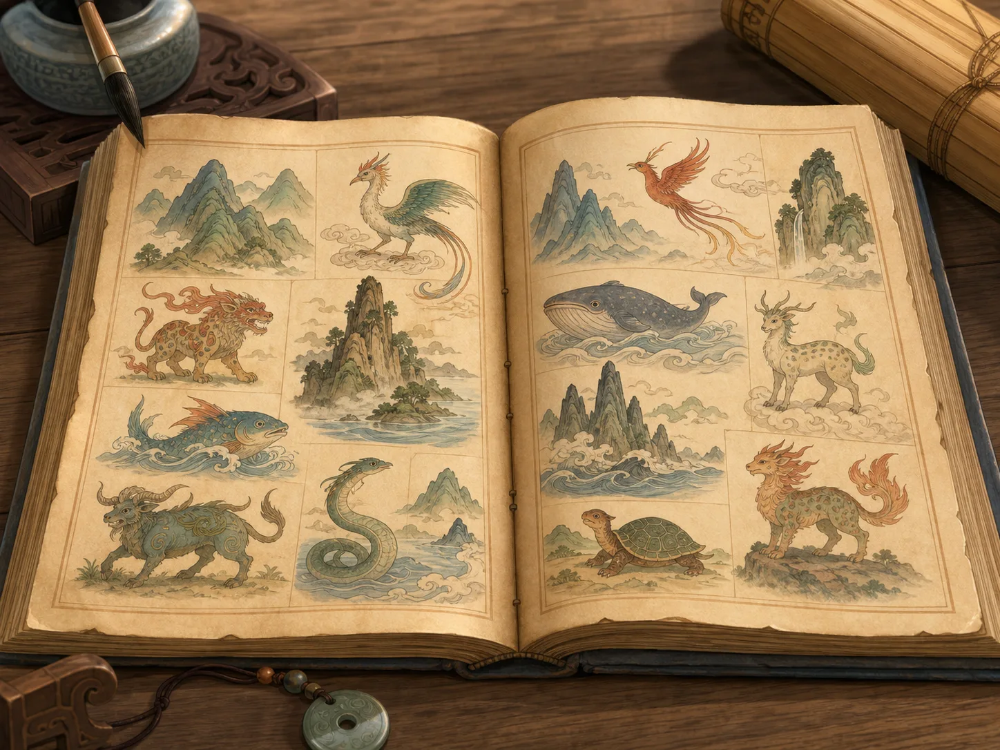
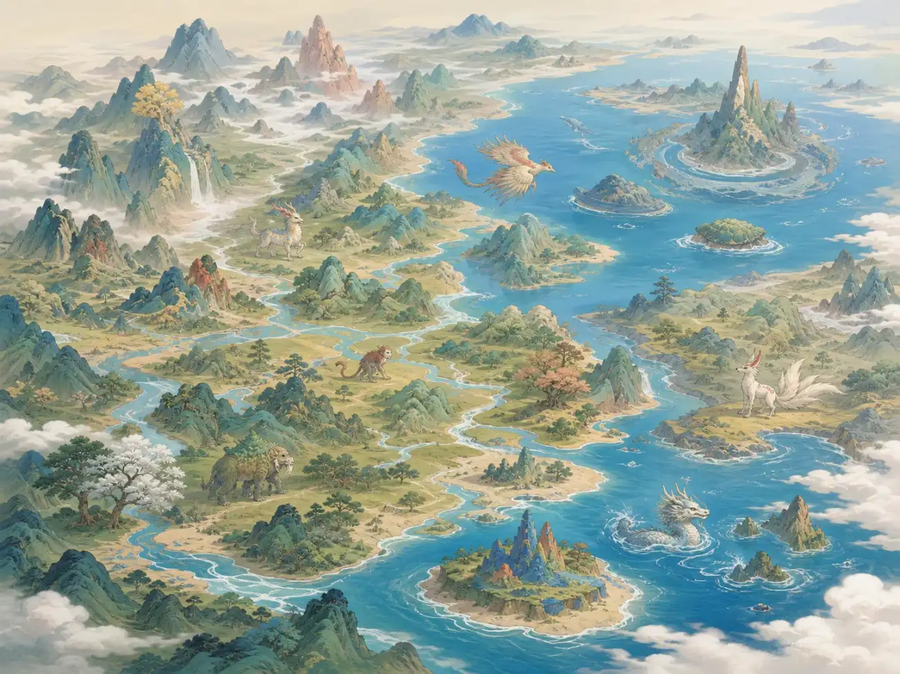
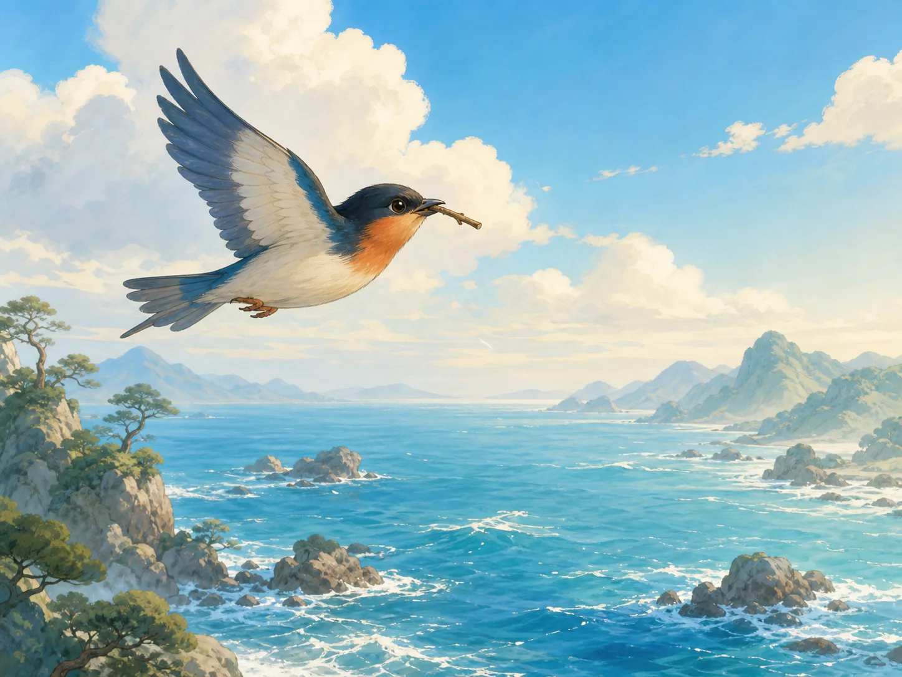
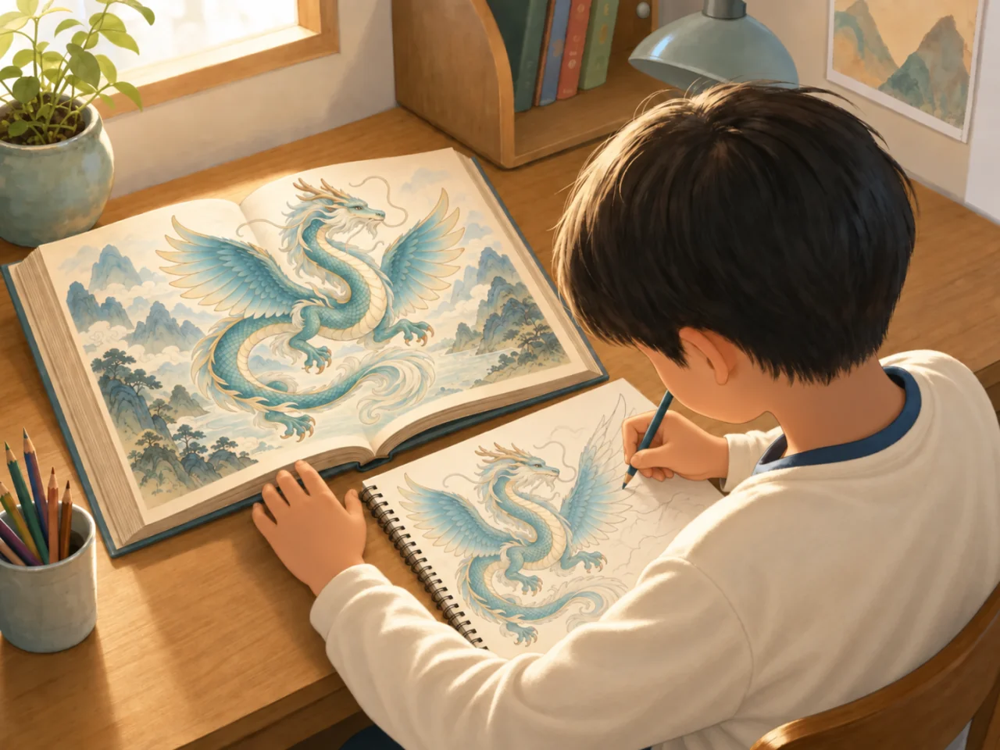

《山海经》：中国最古老的神怪百科全书
Classic of Mountains and Seas: China's Ancient Book of Wonders
Page 1
这本书不像普通故事书，更像一本奇怪的记录本
This Book Does Not Act Like a Normal Storybook

When you open Shan Hai Jing, you do not first find one long story. You find mountains, seas, strange creatures, and places far away.
《山海经》是一本很奇怪的书。它不像《西游记》那样有一支队伍一路往前走，也不像《三国演义》那样有一群人物轮流上场。
翻开它，你更像是在看一本很古老的记录本：这座山在哪儿，那条河里有什么，那片海边住着什么样的人，某个地方又会出现什么奇怪的兽。
更神奇的是，直到今天，大家也说不准这本书最早到底是谁写的。它像一只从很久很久以前漂下来的木箱，里面装满了碎片，可每一片都让人忍不住想再多看一眼。
Shan Hai Jing, or Classic of Mountains and Seas, is a very unusual book. It is not like Journey to the West, where one team keeps moving forward. It is not like Romance of the Three Kingdoms, where one group of characters keeps taking the stage.
When you open it, the book feels more like a very old notebook. One mountain is here. A certain river holds a strange fish. A faraway shore has unusual people. Another place has a beast no one has ever seen.
The stranger thing is this: even today, no one can say for sure who first wrote it. It feels like a box drifting down from a very distant age, filled with pieces and fragments, each one making you want to keep looking.
Page 2
它一半像地图，一半像怪兽名册
It Feels Half Like a Map and Half Like a Creature List

The book carefully records mountains and rivers, then suddenly surprises you with strange lands and stranger animals.
《山海经》里有些地方认真得像地图。它会记下山连着山，河接着河，往东走多远，往西又会遇见什么。
可读着读着，它又会忽然变得很不像地图。前面还在记路，后面就冒出各种奇怪国家、怪兽和神奇用处，好像一本地理书忽然和想象力撞在了一起。
所以很多人读《山海经》的感觉都差不多：你本来以为自己在认路，结果下一页已经走进了一个比路更奇怪的世界。
Some parts of Shan Hai Jing are almost as orderly as a map. The book records mountain after mountain and river after river. It tells you what lies east, what lies west, and what may come next.
But while you are reading, the book can suddenly stop behaving like a map at all. One moment it is tracking the land. The next moment it is giving you strange countries, strange creatures, and surprising uses for them, as if geography had suddenly bumped into imagination.
That is why many readers feel the same surprise. You think you are learning the road, and then suddenly you are standing inside a world far stranger than the road itself.
Page 3
中国很早很早的一些神话，也是靠它留了下来
Some of China's Oldest Myths Stayed Alive Because This Book Kept Them

Jingwei carries twig after twig and pebble after pebble to fill the sea. The sea is still there, but the little bird never stops.
《山海经》里还装着很多很老很老的神话。像夸父追日、A small myth bird that keeps carrying stones and twigs to fill the sea.填海，这些名字后来一代一代被人讲下去，很大一部分线索都能在这里找到。
这些故事为什么动人？因为它们常常不讲“能不能成功”，而是在讲“会不会一直做下去”。精卫那么小，海那么大，她当然填不平。可她还是一趟一趟飞。
所以《山海经》不只是怪。它里面还有一种很古老的力气。有些故事勇敢，有些故事倔强，有些故事让人觉得：原来很久以前的人，也会把不肯放弃写得这么亮。
Shan Hai Jing also carries many very old Chinese myths. Stories like A small myth bird that keeps carrying stones and twigs to fill the sea. filling the sea and A giant from an old Chinese myth who ran after the sun. chasing the sun were retold for generations, and many of their early clues can still be found here.
Why do these stories move people so deeply? Often they are not really asking, "Will this succeed?" They are asking, "Will this continue?" Jingwei is tiny, and the sea is enormous. Of course she cannot fill it quickly. But she keeps flying back with twigs and stones anyway.
That is why Shan Hai Jing is not only strange. It also contains an old kind of strength. Some stories are brave. Some are stubborn. Some make readers feel that long ago people already knew how to make perseverance shine.
Page 4
两千多年以后，它还在点燃新的想象力
More Than Two Thousand Years Later, It Is Still Lighting New Imagination

A young reader today may open Shan Hai Jing and immediately want to draw the strange creatures inside it.
今天很多动画、游戏、插画和小说，还是会从《山海经》里借名字和灵感。很多人先在新的作品里听见那些怪兽，再回头去找这本老书。
这说明《山海经》最厉害的地方，不只是它很古老，而是它到现在还会继续长。每一代人翻开它，都会从里面挑出自己最想记住的东西。
有的孩子会喜欢怪兽，有的孩子会喜欢神话，有的孩子会喜欢那种“世界原来还可以想得这么奇怪”的感觉。一本没有完全说明白自己是谁的书，就这样一直活到了今天。
Today, many cartoons, games, illustrations, and novels still borrow names and ideas from Shan Hai Jing. Quite often, readers meet the creatures in a new work first and only later go back to look for the old book.
That shows the book's deepest power. Its greatness is not only that it is ancient. It is that it keeps growing inside new imaginations. Each generation opens it and chooses something different to carry away.
Some children love the creatures. Some love the myths. Some love the feeling that the world can be imagined in such a strange and wonderful way. A book that never fully explains itself has remained alive for more than two thousand years.
小结
In Summary
《山海经》不像一条顺着走的长故事。它更像一只装满山、海、怪兽、神话和远方碎片的大箱子。
也正因为它不整整齐齐，它反而特别会勾住人的想象力。你翻开它的时候，像在看一本很老的书；合上它的时候，脑子里却常常已经长出了新的画面。
Shan Hai Jing is not a long story that moves in one straight line. It is more like a great box filled with mountains, seas, creatures, myths, and fragments of faraway places.
And because it is not neat or simple, it keeps pulling at the imagination. When you open it, you are reading a very old book. When you close it, new pictures often keep growing in your mind.